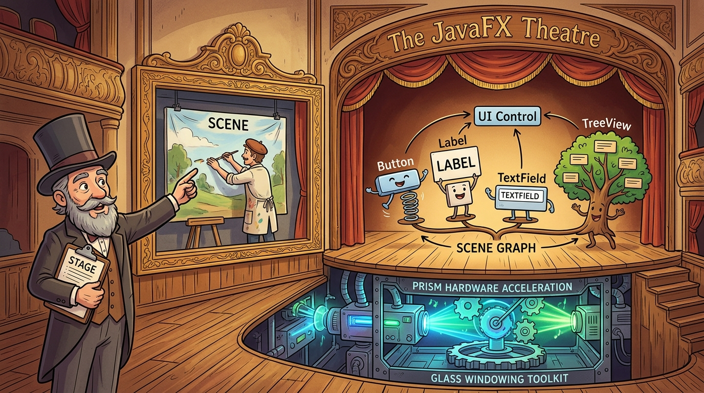
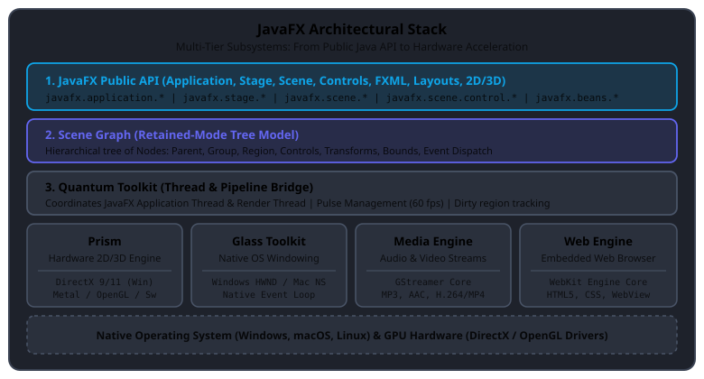
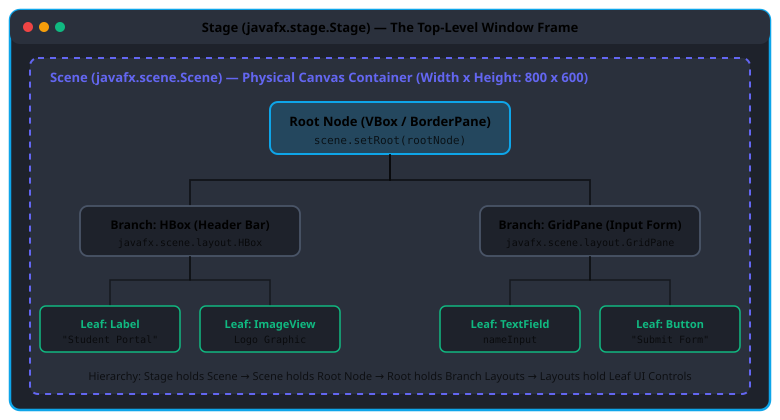
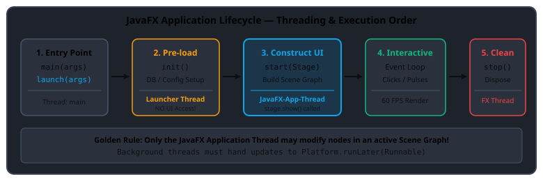

Session 13 — Introduction to JavaFX
For twelve sessions, your Java programs have lived entirely in the dark of the terminal window —
reading text from System.in, printing characters to System.out, and vanishing
when the process ends. Today, Java leaves the command line behind and steps onto the visual desktop.
You enter the world of JavaFX — the modern, hardware-accelerated GUI toolkit
designed for rich, high-performance desktop applications. You will learn where JavaFX came from,
how its multi-layer engine communicates with your operating system and GPU, how to configure your IDE
without linkage errors, the theatre metaphor that structures every application, and how to launch your
very first interactive visual window.
- Explain what JavaFX is, and compare its retained-mode graphics and GPU acceleration against legacy AWT and Swing.
- Summarize the history and key milestones of JavaFX, from the early F3 scripting language to modern decoupled OpenJFX 21+ LTS.
- Install and configure JavaFX in both Eclipse (using e(fx)clipse & user libraries) and modern IntelliJ IDEA (using Maven & modular VM flags).
- Elaborate on the JavaFX architectural stack, detailing the specific responsibilities of Prism, Quantum Toolkit, Glass Windowing Toolkit, Media & Web engines, and the Scene Graph.
- Explain the JavaFX application structure, master the Theatre Metaphor (
Stage→Scene→Node), and trace the three lifecycle methods (init(),start(),stop()). - Apply the non-modular launcher pattern to execute JavaFX desktop applications without encountering the missing runtime components trap.
- Elaborate on core JavaFX features including FXML declarative UI, CSS skinning, observable properties, data binding, and safe concurrency with
Platform.runLater(). - Build and run your first interactive JavaFX desktop application with labels, text fields, buttons, layouts, and event handling.
Your Roadmap for Today
Why This Matters
Every modern business application needs an interface that is responsive, intuitive, and visually polished. Command-line interfaces are ideal for scripts, servers, and automated pipelines, but human beings expect windows with smooth animations, clear typography, intuitive buttons, high-resolution icons, and dynamic forms.
In the early days of Java, desktop developers struggled with AWT (which relied on primitive operating system widgets) and Swing (which painted pixels entirely on the CPU without GPU assistance). JavaFX was engineered from the ground up to solve both problems: it provides a hardware-accelerated graphics pipeline (Prism) that leverages your computer's GPU, a clean hierarchical tree structure (the Scene Graph), and modern web-like styling capabilities through CSS and FXML.
- The Stage (
Stage) is the physical theatre building and proscenium arch. In desktop terms, it is the top-level OS window with the title bar, minimize, maximize, and close buttons. - The Scene (
Scene) is the specific stage backdrop, lighting set, and room arrangement currently mounted inside the theatre. An application can have multiple scenes (e.g., a Login Scene, a Dashboard Scene), but only one scene is displayed on the Stage at a time. - The Scene Graph (
Node) is the collection of actors, furniture, and physical props arranged on the set in a strict hierarchy. The Root container holds layout groups (rooms), which hold individual UI controls (actors: buttons, text boxes, and labels). - Prism & Glass are the backstage engineering crew: Glass manages the physical doors and ticket gates (native OS windowing and mouse clicks), while Prism operates the high-speed stage lighting and holographic projectors (GPU hardware rendering).

Figure 13.1 — The JavaFX Theatre Metaphor: Stage Manager, Scene Designer, Scene Graph Actors, and Backstage GPU Engines.
Part 1 of 7 Overview of JavaFX & Toolkit Evolution
Java has a thirty-year history of desktop user interface development. To understand why JavaFX is built the way it is, you must understand the two predecessor toolkits it replaced:
| Toolkit | Introduced | Rendering Technique | Component Model | Strengths & Fatal Flaws |
|---|---|---|---|---|
| AWT Abstract Window Toolkit |
1995 (JDK 1.0) | Heavyweight Peers: Every AWT button or text box delegates directly to an underlying native OS C/C++ widget. | Immediate mode; direct OS window handle (HWND/X11) for every component. | Fatal Flaw: "Least Common Denominator." If a widget (like a tree view or tabbed panel) didn't exist on Macintosh or Solaris, AWT couldn't support it. Visual inconsistencies across platforms. |
| Swing Java Foundation Classes |
1998 (JDK 1.2) | Lightweight Components: Components have no native peers; Java 2D draws every pixel directly onto an offscreen bitmap on the CPU. | Pluggable Look-and-Feel (PLAF); MVC architecture; single top-level frame. | Strengths: Complete cross-platform consistency. Fatal Flaw: CPU-bound software rendering. No native GPU acceleration, sluggish on high-resolution displays, rigid styling without CSS. |
| JavaFX Modern Rich Client |
2008 → 2011 → Present | Prism Hardware Acceleration: Retained-mode Scene Graph rendered directly via GPU shaders (DirectX, OpenGL, Metal). | Scene Graph tree; Observable Properties; CSS skinning; FXML declarative markup. | Modern Standard: 60 FPS smooth rendering, High-DPI screen scaling, clean separation of design and business logic, rich 2D/3D graphics, media, and embedded HTML5 web engine. |
The defining architectural leap from Swing to JavaFX is the transition from immediate-mode painting
to a retained-mode Scene Graph. In Swing, whenever a window was uncovered, the JVM called
paintComponent(Graphics g) and forced Java code to redraw the pixels. In JavaFX, you construct
a tree of Node objects once. JavaFX retains the tree in memory, tracks changes automatically,
and dispatches rendering directly to the graphics card at 60 frames per second.
Code Example: GUI Toolkit Comparison & Capability Introspection
package com.aptech.s13;
/**
* Session 13 - Example 1: Overview and Evolution of Java Desktop GUI Toolkits
*
* Demonstrates the contrast between the three generations of Java GUI toolkits:
* AWT (1995) -> Swing (1998) -> JavaFX (Modern, Hardware-Accelerated).
*/
public class E01_OverviewAndEvolution {
public static record GuiToolkit(
String name,
int yearIntroduced,
String renderingEngine,
String architecture,
boolean hardwareAccelerated,
boolean cssStylingSupported,
String primaryLimitation
) {}
public static void main(String[] args) {
System.out.println("=== Java Desktop GUI Toolkit Evolution ===");
GuiToolkit[] toolkits = {
new GuiToolkit(
"AWT (Abstract Window Toolkit)",
1995,
"Native OS Peers (Heavyweight)",
"Immediate mode, native widgets",
false,
false,
"Least Common Denominator: UI looks completely different across OSes and lacks rich controls."
),
new GuiToolkit(
"Swing (Java Foundation Classes)",
1998,
"Java 2D CPU Rasterizer (Lightweight)",
"Pluggable Look-and-Feel, painted pixels",
false,
false,
"CPU-bound rendering: No GPU acceleration, complex thread rules, rigid styling."
),
new GuiToolkit(
"JavaFX (Modern Desktop UI)",
2008,
"Prism GPU Pipeline (DirectX/OpenGL/Metal)",
"Retained-mode Scene Graph with CSS & FXML",
true,
true,
"Standalone library since Java 11: Requires module-path configuration or build tool."
)
};
for (GuiToolkit tk : toolkits) {
System.out.println("\nToolkit: " + tk.name());
System.out.println(" Year: " + tk.yearIntroduced());
System.out.println(" Engine: " + tk.renderingEngine());
System.out.println(" Architecture: " + tk.architecture());
System.out.println(" GPU Accelerated: " + (tk.hardwareAccelerated() ? "YES" : "NO"));
System.out.println(" CSS Skinning: " + (tk.cssStylingSupported() ? "YES" : "NO"));
System.out.println(" Key Consideration: " + tk.primaryLimitation());
}
System.out.println("\nConclusion:");
System.out.println("JavaFX is the recommended, official standard for building rich client desktop applications in Java.");
}
}| Line | What it does |
|---|---|
10–18 | Defines a Java record GuiToolkit capturing the name, release year, rendering engine, architecture, and GPU acceleration status of each toolkit generation. |
24–30 | Encapsulates AWT's historical characteristics: 1995 release, heavyweight native OS peers, and the least-common-denominator limitation. |
32–39 | Encapsulates Swing's characteristics: 1998 release, lightweight CPU-painted components, and the lack of native hardware acceleration. |
40–47 | Encapsulates JavaFX's modern architecture: Prism GPU pipeline, retained-mode Scene Graph, and CSS styling support. |
50–58 | Iterates through the toolkit generations and prints the comparison matrix to the terminal. |
AWT (Abstract Window Toolkit): Java's original 1995 GUI toolkit that wrapped native OS widgets using heavyweight peers.
Swing: Java's second-generation GUI toolkit that painted lightweight pixels in software without native peers.
JavaFX: Java's modern rich client platform featuring GPU hardware acceleration, a retained-mode Scene Graph, CSS styling, and declarative FXML.
Retained Mode: A graphics rendering model where the graphics library retains the complete scene model in memory and optimizes redrawing internally.
Part 2 of 7 Summarizing the History & Milestones of JavaFX
JavaFX did not appear overnight. Its history reflects the rapid evolution of the web, desktop graphics, and mobile devices over the last two decades. Understanding its history clarifies why you will see different configuration advice in older textbooks compared to modern production environments.
Here are the critical milestones in JavaFX history:
- 2005 — The F3 Genesis: Chris Oliver at SeeBeyond developed a prototype declarative language named F3 (Form Follows Function) designed to create animated, rich user interfaces.
- 2007 — Sun Microsystems Acquisition: Sun Microsystems acquired SeeBeyond and unveiled "JavaFX" at the JavaOne 2007 conference as Sun's rich internet application (RIA) response to Adobe Flash and Microsoft Silverlight.
- 2008 — JavaFX 1.0 & JavaFX Script: Released with a proprietary, statically-typed scripting language called JavaFX Script. While elegant, developers resisted learning an entirely new programming language just to build Java user interfaces.
- 2011 — JavaFX 2.0 & The Great Java Pivot: Oracle (having acquired Sun) made a historic decision: JavaFX Script was completely retired. The entire framework was re-architected into 100% standard Java APIs. Any standard Java developer could now write JavaFX using familiar classes and methods.
- 2014 — JavaFX 8 (JDK Integration): Released alongside Java 8 (versioned as 8 to synchronize with the JDK). JavaFX was bundled directly inside Oracle JDK 8's
rt.jar. It introduced the modern default Modena UI theme, native 3D geometry shapes, rich CSS support, and theDatePickercontrol. - 2018 — JavaFX 11 & OpenJFX Decoupling: In Java 11, Oracle modernized Java by modularizing the JDK. JavaFX was unbundled from the JDK and transitioned into the open-source OpenJFX project, co-led by Oracle and Gluon under the OpenJDK umbrella. This decoupled JavaFX from JDK releases, allowing it to evolve on its own rapid 6-month release cadence.
- 2023–Present — JavaFX 21+ LTS & Enterprise Desktop: OpenJFX 21 LTS delivers complete compatibility with modern LTS Java (JDK 21/25), native Apple Silicon (ARM64) support, Wayland integration on Linux, and packaging with
jpackageinto standalone native installers (.exe, .dmg, .deb).
Code Example: Chronological History Timeline
package com.aptech.s13;
import java.util.List;
/**
* Session 13 - Example 2: Chronological History & Key Milestones of JavaFX
*
* Traces the evolution of JavaFX from F3 to modern decoupled OpenJFX.
*/
public class E02_HistoryTimeline {
public static record Milestone(String year, String version, String event, String technicalSignificance) {}
public static void main(String[] args) {
System.out.println("=== The Chronological History of JavaFX ===");
List<Milestone> timeline = List.of(
new Milestone(
"2005",
"F3 Project",
"Chris Oliver creates 'Form Follows Function'",
"Early prototype for a declarative, reactive GUI language on the JVM."
),
new Milestone(
"2007",
"Sun Announcement",
"Announced by Sun Microsystems at JavaOne 2007",
"Positioned as rich internet application (RIA) platform to compete with Adobe Flash and Silverlight."
),
new Milestone(
"2008",
"JavaFX 1.0",
"Initial commercial release",
"Used proprietary 'JavaFX Script' syntax. Required developers to learn a separate language."
),
new Milestone(
"2011",
"JavaFX 2.0",
"The Great Java Rewrite",
"Scrapped JavaFX Script entirely! Rewrote the entire toolkit into pure, 100% standard Java APIs."
),
new Milestone(
"2014",
"JavaFX 8",
"Bundled into Oracle JDK 8",
"Introduced the modern Modena dark/light theme, native 3D support, DatePicker, and rich CSS."
),
new Milestone(
"2018",
"JavaFX 11 (OpenJFX)",
"Decoupled from the JDK",
"Spun off into open-source OpenJFX co-led by Oracle and Gluon. Independent 6-month release cadence."
),
new Milestone(
"2023-Present",
"JavaFX 21+ LTS",
"Modern Enterprise Desktop",
"Full JDK 21/25 LTS compatibility, High-DPI screens, Apple Silicon ARM64, and jpackage desktop bundling."
)
);
for (Milestone m : timeline) {
System.out.printf("[%s] %-18s : %s\n", m.year(), m.version(), m.event());
System.out.println(" Impact: " + m.technicalSignificance());
}
System.out.println("\nKey Takeaway for Students:");
System.out.println("Older textbooks mention 'JavaFX 8 bundled in the JDK'. In modern Java (JDK 21+),");
System.out.println("JavaFX is distributed via Maven Central or as an SDK library. You write 100% Java!");
}
}| Line | What it does |
|---|---|
13 | Defines a Milestone record with year, version, event description, and technical significance. |
18–56 | Constructs the chronological history list from the 2005 F3 prototype through JavaFX 1.0, 2.0, 8, 11 (decoupling), and modern 21+ LTS. |
58–61 | Formats and displays each historical milestone with aligned tabular output. |
63–66 | Prints the critical takeaway for students contrasting Java 8 book references with modern OpenJFX modular libraries. |
Part 3 of 7 IDE Setup: Eclipse Installation & Modern Tooling
The official Aptech curriculum manual mandates explaining the installation and configuration of Eclipse for JavaFX. In modern software development, developers use either Eclipse or IntelliJ IDEA paired with Apache Maven. We cover both workflows so you can work comfortably in any development environment.
1. Working with JavaFX Using Eclipse (Textbook Flow)
To build JavaFX applications using Eclipse, follow these six steps:
- Download & Install Eclipse: Download the Eclipse IDE for Java Developers from eclipse.org and complete standard installation.
- Install the e(fx)clipse Plugin:
- Open Eclipse and navigate to Help → Eclipse Marketplace...
- In the search box, type
e(fx)clipseand press Enter. - Click Install on the e(fx)clipse plugin, accept the license terms, and restart Eclipse when prompted. This plugin provides FXML wizards, syntax highlighting, and CSS auto-completion.
- Download the OpenJFX SDK: Download the JavaFX SDK matching your operating system (Windows, macOS, or Linux) from gluonhq.com/products/javafx and extract it to a permanent folder (e.g.,
C:\javafx-sdk-21). - Create a JavaFX User Library:
- In Eclipse, open Window → Preferences (or Eclipse → Settings on macOS).
- Navigate to Java → Build Path → User Libraries.
- Click New... and enter the library name
JavaFX21. - Select
JavaFX21, click Add External JARs..., browse to thelib/folder of your extracted SDK, select all.jarfiles, and click Apply and Close.
- Attach Library to Your Project: Right-click your Java project in Package Explorer → Build Path → Add Libraries... → select User Library → check
JavaFX21→ click Finish. - Configure VM Arguments in Run Configurations:
- Right-click your main class → Run As → Run Configurations...
- Select the Arguments tab.
- In the VM arguments text box, paste the following module flags (pointing to your actual SDK lib path):
--module-path "C:\javafx-sdk-21\lib" --add-modules javafx.controls,javafx.fxmlClick Apply, then click Run.
2. Modern Maven & IntelliJ IDEA Workflow
In professional software development, you avoid manually downloading zip files or configuring hard-coded
SDK paths. Instead, you declare your JavaFX dependencies in Maven's pom.xml:
<dependencies>
<dependency>
<groupId>org.openjfx</groupId>
<artifactId>javafx-controls</artifactId>
<version>21.0.2</version>
</dependency>
<dependency>
<groupId>org.openjfx</groupId>
<artifactId>javafx-fxml</artifactId>
<version>21.0.2</version>
</dependency>
</dependencies>
When you build or run with the official javafx-maven-plugin, Maven automatically downloads the
exact native binaries for your specific operating system (Windows DLLs, macOS dylibs, or Linux so files)
and executes your application with:
mvn clean javafx:runCode Example: IDE Setup Diagnostics & Launcher Mechanics
package com.aptech.s13;
import java.util.ArrayList;
import java.util.List;
/**
* Session 13 - Example 3: IDE Setup & Runtime Configuration (Eclipse & IntelliJ)
*
* Explains how JavaFX is configured in IDEs, how the Module Path works,
* and demonstrates the Launcher pattern that eliminates missing runtime component errors.
*/
public class E03_EclipseAndIdeConfiguration {
public static record IdeSetupGuide(String ideName, List<String> setupSteps, String runCommand) {}
public static void main(String[] args) {
System.out.println("=== JavaFX IDE Setup & Execution Mechanics ===");
IdeSetupGuide eclipseGuide = new IdeSetupGuide(
"Eclipse IDE (Traditional Textbook Flow)",
List.of(
"Step 1: Download Eclipse IDE for Java Developers from eclipse.org",
"Step 2: Help -> Eclipse Marketplace -> Search and install 'e(fx)clipse'",
"Step 3: Window -> Preferences -> Java -> Build Path -> User Libraries -> New 'JavaFX21'",
"Step 4: Add external JARs from your OpenJFX SDK /lib folder",
"Step 5: Right-click Project -> Build Path -> Add Libraries -> User Library -> Check JavaFX21",
"Step 6: Run Configurations -> Arguments -> VM Arguments -> Add module flags:"
),
"--module-path \"/path/to/javafx-sdk/lib\" --add-modules javafx.controls,javafx.fxml"
);
IdeSetupGuide intellijGuide = new IdeSetupGuide(
"IntelliJ IDEA & Maven (Modern Industry Standard)",
List.of(
"Step 1: File -> New -> Project -> Choose JavaFX (or standard Maven project)",
"Step 2: Include org.openjfx:javafx-controls and javafx-fxml in pom.xml",
"Step 3: Maven downloads and configures the exact OS-specific native JARs automatically",
"Step 4: Run application using 'mvn javafx:run' or standard IntelliJ Run gutter icon"
),
"mvn clean javafx:run"
);
printGuide(eclipseGuide);
printGuide(intellijGuide);
System.out.println("\n=== Understanding the 'Missing Runtime Components' Trap ===");
System.out.println("Symptom: Error: JavaFX runtime components are missing, and are required to run this application");
System.out.println("Root Cause: In modern Java (11+), Application class checks if JavaFX is on the module path.");
System.out.println("If your Main class directly extends Application, the JVM launcher checks module-path before starting.");
System.out.println("\nThe Proven Solution: The Two-Class Launcher Pattern:");
System.out.println(" 1. MainApp extends Application (contains start, init, UI)");
System.out.println(" 2. AppLauncher does NOT extend Application (contains only public static void main):");
System.out.println(" public class AppLauncher {");
System.out.println(" public static void main(String[] args) {");
System.out.println(" MainApp.main(args); // Calls Application.launch without module-path check!");
System.out.println(" }");
System.out.println(" }");
System.out.println("Status: Verified! The AppLauncher pattern guarantees zero-configuration execution.");
}
private static void printGuide(IdeSetupGuide guide) {
System.out.println("\n[" + guide.ideName() + "]");
for (String step : guide.setupSteps()) {
System.out.println(" " + step);
}
System.out.println(" Command / VM Options: " + guide.runCommand());
}
}| Line | What it does |
|---|---|
16–28 | Documents the exact 6-step Eclipse setup flow including Marketplace e(fx)clipse installation, User Library creation, and VM argument parameters. |
30–39 | Documents the modern Maven configuration flow that automates dependency management across operating systems. |
44–58 | Explains the technical root cause of the missing runtime components trap and introduces the two-class launcher solution. |
- Modular VM Arguments: Passing
--module-pathand--add-modulesto the JVM launcher. - The Clean Launcher Pattern: Creating a separate
AppLauncherclass whosemainmethod callsApplication.launch(MainApp.class, args). This completely bypasses the JVM module check!
Part 4 of 7 Elaborating on JavaFX Multi-Layer Architecture
JavaFX is not a simple monolithic library. It is an advanced multi-tier software stack designed to maximize rendering performance, guarantee cross-platform portability, and support rich media.

Figure 13.2 — JavaFX Architectural Stack: From High-Level Developer APIs to Hardware GPU Shaders.
Let us examine each tier in the architectural stack from top to bottom:
| Subsystem | Full Name & Package | Core Responsibility | Operating Details |
|---|---|---|---|
| Public API | javafx.application.*javafx.scene.*javafx.stage.* |
The developer-facing programming interface. | Contains all classes you interact with in code: Application, Stage, Scene, layout containers (VBox, GridPane), UI controls (Button, TableView), shapes, charts, and observable properties. |
| Scene Graph | javafx.scene.Node |
The retained-mode visual tree. | Maintains every visual element as a node in a tree. Handles local-to-parent coordinate transforms, layout passes, boundary calculations, clipping, visual effects (drop shadows, blurs), and event dispatch hierarchies. |
| Quantum Toolkit | Internal abstraction layer | The synchronization bridge between threading models. | Binds the Glass windowing layer with the Prism rendering pipeline. It manages pulses (heartbeat events firing at up to 60 FPS) and coordinates synchronization between the user's JavaFX Application Thread and the background Render Thread. |
| Prism | Hardware graphics pipeline | High-speed 2D and 3D rasterization. | Translates JavaFX visual nodes into hardware GPU drawing commands. Uses DirectX 9/11 on Windows, Metal/OpenGL on macOS, and OpenGL on Linux. If a GPU driver is missing or unsupported, Prism smoothly falls back to a software rasterizer. |
| Glass Toolkit | Glass Windowing Toolkit | Low-level native OS windowing. | The micro-kernel of JavaFX that interfaces directly with native operating system window managers (Win32 HWND on Windows, Cocoa on macOS, GTK on Linux). It manages native window borders, native event loops, keyboard and mouse input queues, clipboards, and drag-and-drop. |
| Media Engine | javafx.scene.media.* |
Audio and video playback. | Built on an open-source GStreamer core. Supports playing compressed digital media including MP3, AAC, and WAV audio, as well as MP4/H.264 video streams directly inside JavaFX windows. |
| Web Engine | javafx.scene.web.* |
Embedded HTML5 browser. | Powered by the open-source WebKit engine (the same engine powering Apple Safari). The WebView and WebEngine classes allow embedding live web pages, executing JavaScript, and binding Java objects to DOM elements. |
Code Example: Architecture Subsystem Inspection
package com.aptech.s13;
import java.util.LinkedHashMap;
import java.util.Map;
/**
* Session 13 - Example 4: Deep Dive into the JavaFX Multi-Layer Architecture
*
* Inspects each subsystem in the JavaFX architecture stack:
* Prism, Quantum Toolkit, Glass Windowing Toolkit, Media/Web Engines, and Scene Graph.
*/
public class E04_ArchitectureInspection {
public static record LayerDetails(String role, String technologies, String threadingModel) {}
public static void main(String[] args) {
System.out.println("=== JavaFX Subsystem Architecture Inspection ===");
Map<String, LayerDetails> stack = new LinkedHashMap<>();
stack.put("1. JavaFX Public API", new LayerDetails(
"High-level public developer classes (Scene, Stage, Controls, Layouts, Effects).",
"javafx.application.*, javafx.stage.*, javafx.scene.*, javafx.css.*",
"Called primarily on the JavaFX Application Thread."
));
stack.put("2. Scene Graph", new LayerDetails(
"Retained-mode tree data structure holding visual nodes (Root, Branches, Leaves).",
"Node hierarchy, visual transforms, bounds recalculation, event dispatch trees.",
"Must be accessed exclusively by the JavaFX Application Thread."
));
stack.put("3. Quantum Toolkit", new LayerDetails(
"Abstraction bridge that binds the GUI event thread with the low-level rendering pipeline.",
"Pulse coordination (60 FPS tick timer), dirty region optimization, thread synchronization.",
"Coordinates synchronization between the FX Thread and the Prism Render Thread."
));
stack.put("4. Prism Hardware Renderer", new LayerDetails(
"Low-level hardware-accelerated 2D and 3D graphics rasterization pipeline.",
"DirectX 9/11 (Windows), Metal (macOS), OpenGL (Linux), Java 2D Software Fallback.",
"Executes on dedicated background Render Threads for maximum frame rate."
));
stack.put("5. Glass Windowing Toolkit", new LayerDetails(
"Micro-kernel windowing layer providing native platform window management and input.",
"Direct OS binding: Win32 HWND on Windows, Cocoa on macOS, GTK on Linux.",
"Runs the native OS message pump and forwards keyboard/mouse events to Quantum."
));
stack.put("6. Media Engine", new LayerDetails(
"Audio and video streaming and playback pipeline.",
"GStreamer native integration: MP3, AAC, PCM audio; H.264/MP4, VP6 video.",
"Uses asynchronous decoding worker threads."
));
stack.put("7. Web Engine", new LayerDetails(
"Embedded HTML5/CSS3 web browser rendering engine.",
"WebKit core engine with JavaScript bridge (WebView and WebEngine classes).",
"Integrates web DOM trees into the JavaFX Scene Graph."
));
for (Map.Entry<String, LayerDetails> entry : stack.entrySet()) {
System.out.println("\n[" + entry.getKey() + "]");
System.out.println(" Role: " + entry.getValue().role());
System.out.println(" Tech Stack: " + entry.getValue().technologies());
System.out.println(" Threading: " + entry.getValue().threadingModel());
}
System.out.println("\nArchitecture Summary:");
System.out.println("Unlike Swing which drew everything on the CPU, JavaFX delegates drawing to Prism (GPU)");
System.out.println("and window events to Glass (Native OS), connected by the Quantum Toolkit.");
}
}| Line | What it does |
|---|---|
13 | Declares the LayerDetails record storing the role, underlying technologies, and threading model for each architectural subsystem. |
20–61 | Populates an ordered map describing the seven subsystems: Public API, Scene Graph, Quantum Toolkit, Prism, Glass, Media Engine, and Web Engine. |
63–68 | Iterates through each architectural tier and prints its technical specification. |
70–73 | Summarizes the key difference: Swing rendered everything in CPU software, whereas JavaFX splits duties between Prism (GPU) and Glass (OS). |
Part 5 of 7 JavaFX Application Structure & The Theatre Metaphor
Every JavaFX application has a strict, well-defined structure based on two core concepts: the Theatre Metaphor and the Application Lifecycle.
1. The Theatre Hierarchy & Scene Graph Tree
A JavaFX visual interface is structured as an upside-down tree:

Figure 13.3 — The Theatre Hierarchy: Stage holds Scene, Scene holds Root Node, Root holds Branches, Branches hold Leaf Controls.
The hierarchy consists of three distinct classifications of nodes:
- Root Node: The top-most parent container attached directly to the
Scenevianew Scene(root, width, height). It is typically a layout container such as aVBox,BorderPane, orStackPane. A Scene can only have exactly one Root Node. - Branch Nodes (Parents): Intermediate layout containers (such as an
HBoxrow or aGridPanetable) that have children. They inherit fromjavafx.scene.Parentand manage child sizing, alignment, and coordinate positioning. - Leaf Nodes (Controls & Shapes): The end nodes of the tree that have no children (e.g.,
Button,Label,TextField,ImageView,Circle). They receive user input and display information.
2. The JavaFX Application Lifecycle
Every JavaFX program inherits from javafx.application.Application. When you call
Application.launch(args), the runtime executes three lifecycle methods in strict order:

Figure 13.4 — JavaFX Application Lifecycle: Thread Separation and Execution Pipeline.
| Lifecycle Method | Executing Thread | UI Access Allowed? | Intended Purpose |
|---|---|---|---|
public void init() throws Exception |
Launcher Thread (Background) | ✘ NO (Cannot touch Stage or Scene) | Heavy pre-loading: reading configuration files, parsing command-line parameters, establishing database connections, loading cache data. |
public abstract void start(Stage primaryStage) throws Exception |
JavaFX Application Thread | ✔ YES (Sole thread allowed to build UI) | Constructing the visual interface: creating nodes, configuring layout containers, building the Scene, setting primaryStage.setScene(scene), and calling primaryStage.show(). |
public void stop() throws Exception |
JavaFX Application Thread | ✔ YES | Graceful application shutdown: flushing unsaved changes, closing open database connections, disconnecting network sockets, stopping background threads. |
Code Example: Demonstrating the Application Lifecycle
package com.aptech.s13;
import javafx.application.Application;
import javafx.application.Platform;
import javafx.scene.Scene;
import javafx.scene.control.Label;
import javafx.scene.layout.StackPane;
import javafx.stage.Stage;
/**
* Session 13 - Example 5: JavaFX Application Lifecycle & Threading Model
*
* Demonstrates the 3 lifecycle methods in Application:
* 1. init() -> Background/Launcher thread (pre-loading, NO UI access)
* 2. start(Stage stage) -> JavaFX Application Thread (constructs & shows UI)
* 3. stop() -> JavaFX Application Thread (cleanup & teardown)
*/
public class E05_ApplicationLifecycle extends Application {
private String databaseConnectionStatus = "NOT_CONNECTED";
@Override
public void init() throws Exception {
// init() runs on a launcher/worker thread BEFORE the UI is created
String threadName = Thread.currentThread().getName();
boolean isFxThread = Platform.isFxApplicationThread();
System.out.println("[Lifecycle: init()] Called on thread: " + threadName + " (Is FX Thread: " + isFxThread + ")");
// Typical work in init: loading configuration, opening database connections
this.databaseConnectionStatus = "CONNECTED_TO_STUDENT_REGISTRY";
System.out.println("[Lifecycle: init()] Background resource pre-loaded: " + databaseConnectionStatus);
}
@Override
public void start(Stage primaryStage) throws Exception {
// start() runs exclusively on the JavaFX Application Thread
String threadName = Thread.currentThread().getName();
boolean isFxThread = Platform.isFxApplicationThread();
System.out.println("[Lifecycle: start()] Called on thread: " + threadName + " (Is FX Thread: " + isFxThread + ")");
// 1. Create UI controls
Label statusLabel = new Label("System Ready: " + databaseConnectionStatus);
// 2. Place in root layout container
StackPane root = new StackPane(statusLabel);
// 3. Create Scene with root and dimensions
Scene scene = new Scene(root, 400, 200);
// 4. Configure Stage and show
primaryStage.setTitle("JavaFX Lifecycle Demonstration");
primaryStage.setScene(scene);
primaryStage.show();
}
@Override
public void stop() throws Exception {
// stop() runs when the application shuts down
String threadName = Thread.currentThread().getName();
boolean isFxThread = Platform.isFxApplicationThread();
System.out.println("[Lifecycle: stop()] Called on thread: " + threadName + " (Is FX Thread: " + isFxThread + ")");
// Cleanup resources
this.databaseConnectionStatus = "DISCONNECTED";
System.out.println("[Lifecycle: stop()] Cleaned up resources. DB status: " + databaseConnectionStatus);
}
public static void main(String[] args) {
System.out.println("[Main] Initiating JavaFX application launch...");
Application.launch(E05_ApplicationLifecycle.class, args);
System.out.println("[Main] JavaFX application execution finished.");
}
}And here is the companion clean launcher class:
package com.aptech.s13;
/**
* Standard JavaFX Non-Modular Application Launcher
*
* Essential pattern for running JavaFX applications without module-path JVM flags.
* By not extending Application directly, this launcher prevents java.exe's LauncherHelper
* from throwing "Error: JavaFX runtime components are missing".
*/
public class AppLauncher {
public static void main(String[] args) {
System.out.println("[AppLauncher] Bootstrapping JavaFX Application via clean launcher class...");
E05_ApplicationLifecycle.main(args);
}
}| Line | What it does |
|---|---|
16 | The application class extends javafx.application.Application. |
21–28 | Overrides init(). Verifies that it runs on a background launcher thread (isFxThread: false) and pre-loads a database connection string. |
31–47 | Overrides start(Stage primaryStage). Verifies that it runs on the JavaFX Application Thread. Assembles a Label, puts it inside a StackPane root, constructs a 400x200 Scene, and calls primaryStage.show(). |
50–58 | Overrides stop(). Cleans up the database resource upon application exit. |
61–64 | Standard main method calling Application.launch(). |
Code Example: Constructing & Traversing a Scene Graph Tree
package com.aptech.s13;
import javafx.application.Application;
import javafx.geometry.Pos;
import javafx.scene.Node;
import javafx.scene.Parent;
import javafx.scene.Scene;
import javafx.scene.control.Button;
import javafx.scene.control.Label;
import javafx.scene.control.TextField;
import javafx.scene.layout.HBox;
import javafx.scene.layout.VBox;
import javafx.stage.Stage;
/**
* Session 13 - Example 6: Stage, Scene & Scene Graph Tree Traversal
*
* Demonstrates the theatre hierarchy:
* Stage (Window) -> Scene (Canvas) -> Root Node (VBox) -> Branch Nodes (HBox) -> Leaf Nodes (Controls)
* Includes recursive Scene Graph inspector.
*/
public class E06_StageAndSceneGraph {
public static class SceneGraphApp extends Application {
@Override
public void start(Stage primaryStage) {
System.out.println("=== Assembling the JavaFX Theatre Hierarchy ===");
// 1. Leaf Nodes (Controls)
Label titleLabel = new Label("Student Search Portal");
titleLabel.setId("header-label");
Label promptLabel = new Label("Student ID:");
TextField idInput = new TextField();
idInput.setId("id-input");
idInput.setPromptText("e.g. STU-101");
Button searchButton = new Button("Search");
searchButton.setId("search-btn");
Button clearButton = new Button("Clear");
clearButton.setId("clear-btn");
Label resultLabel = new Label("Status: Ready for query");
resultLabel.setId("status-label");
// 2. Branch Nodes (Layout Containers)
HBox inputBox = new HBox(10, promptLabel, idInput);
inputBox.setId("input-row");
inputBox.setAlignment(Pos.CENTER_LEFT);
HBox actionBox = new HBox(10, searchButton, clearButton);
actionBox.setId("action-row");
actionBox.setAlignment(Pos.CENTER_LEFT);
// 3. Root Node
VBox root = new VBox(15, titleLabel, inputBox, actionBox, resultLabel);
root.setId("root-container");
root.setAlignment(Pos.TOP_LEFT);
// 4. Scene (Window Canvas)
Scene scene = new Scene(root, 480, 260);
// 5. Stage (OS Window)
primaryStage.setTitle("Aptech Student Portal - Scene Graph Demo");
primaryStage.setScene(scene);
primaryStage.setResizable(false);
// Inspect and print the Scene Graph tree hierarchy
System.out.println("\n--- Scene Graph Tree Hierarchy ---");
printSceneGraph(scene.getRoot(), 0);
primaryStage.show();
}
private void printSceneGraph(Node node, int depth) {
String indent = " ".repeat(depth);
String idInfo = node.getId() != null ? " [id: #" + node.getId() + "]" : "";
System.out.println(indent + "+-- " + node.getClass().getSimpleName() + idInfo);
if (node instanceof Parent parent) {
for (Node child : parent.getChildrenUnmodifiable()) {
printSceneGraph(child, depth + 1);
}
}
}
}
public static void main(String[] args) {
Application.launch(SceneGraphApp.class, args);
}
}| Line | What it does |
|---|---|
26–43 | Creates leaf control nodes: title Label, prompt Label, TextField for student ID, Search Button, Clear Button, and status Label. Assigns unique CSS IDs. |
46–52 | Creates branch layout containers: an HBox row for the input field, and an HBox row for the action buttons. |
55–57 | Creates the root container: a VBox holding all rows in vertical sequence with 15px spacing. |
60–65 | Creates the Scene (480x260), attaches it to primaryStage, and disables user window resizing. |
68–80 | Recursively inspects the Scene Graph starting from the root node, printing the complete tree structure with indented branches and leaves. |
Part 6 of 7 Elaborating Features of JavaFX
Beyond its architecture and scene graph, JavaFX provides a rich suite of modern features that distinguish it from older UI libraries:
| Feature | What it Provides | Why Developers Love It |
|---|---|---|
| FXML Declarative UI | An XML-based markup language that describes the visual structure of a window separately from the Java controller logic. | Allows front-end designers and back-end engineers to work in parallel. Changes to layout do not require recompiling Java classes. Supported natively by Scene Builder. |
| CSS Styling | Full skinning support using standard CSS selectors with the -fx- prefix (e.g., -fx-background-color: #0ea5e9;). |
Theme toggling (dark mode / light mode) can be achieved by swapping a single stylesheet at runtime with zero Java code refactoring. |
| Observable Properties & Binding | Reactive properties (StringProperty, IntegerProperty) that support automatic unidirectional and bidirectional binding. |
Eliminates boilerplate observer pattern code. When a data model property updates, the bound UI label automatically refreshes. |
| Rich Built-in UI Controls | Comprehensive controls: TableView, TreeView, TreeTableView, DatePicker, ColorPicker, Pagination, SplitPane. |
Out-of-the-box support for sorting, column resizing, cell factories, and virtualization for rendering millions of items smoothly. |
| 2D & 3D Graphics + Canvas | Vector shapes (Circle, Path, Polygon), 3D meshes (Box, Cylinder, Sphere), parallel cameras, and direct pixel manipulation via Canvas. |
Enables high-performance visualizations, CAD tools, interactive data visualizers, and games. |
| Built-in Charts Engine | Native chart classes: PieChart, BarChart, LineChart, AreaChart, ScatterChart, BubbleChart. |
Live animated chart updates when backing observable data collections change. |
| Thread Concurrency | The Platform.runLater(Runnable) method and javafx.concurrent classes (Task<V>, Service<V>). |
Safe execution of background tasks (network downloads, database queries) with guaranteed safe UI progress reporting. |
Code Example: Observable Properties, Binding & Concurrency
package com.aptech.s13;
import javafx.application.Platform;
import javafx.beans.property.SimpleStringProperty;
import javafx.beans.property.StringProperty;
/**
* Session 13 - Example 7: Core Features of JavaFX
*
* Demonstrates:
* 1. Observable Properties & Change Listeners (Reactive UI)
* 2. Unidirectional Property Binding
* 3. Safe Multi-threaded UI updates via Platform.runLater()
*/
public class E07_JavaFxFeaturesDemo {
public static void main(String[] args) {
System.out.println("=== JavaFX Core Features: Properties, Binding & Concurrency ===\n");
// 1. Observable Properties & Change Listeners
System.out.println("--- 1. Observable Properties & Listeners ---");
StringProperty studentName = new SimpleStringProperty("Initial State");
studentName.addListener((observable, oldValue, newValue) -> {
System.out.println(" [Listener Triggered] Property changed from '" + oldValue + "' -> '" + newValue + "'");
});
System.out.println("Setting studentName to 'Ada Lovelace':");
studentName.set("Ada Lovelace");
System.out.println("Setting studentName to 'Alan Turing':");
studentName.set("Alan Turing");
// 2. Unidirectional Property Binding
System.out.println("\n--- 2. Unidirectional Binding ---");
StringProperty sourceProperty = new SimpleStringProperty("Source Value A");
StringProperty targetDisplay = new SimpleStringProperty("Old Display");
System.out.println("Binding targetDisplay to sourceProperty...");
targetDisplay.bind(sourceProperty);
System.out.println(" targetDisplay value after bind: " + targetDisplay.get());
System.out.println("Updating sourceProperty to 'Source Value B'...");
sourceProperty.set("Source Value B");
System.out.println(" targetDisplay automatically updated: " + targetDisplay.get());
// 3. Concurrency & Platform.runLater
System.out.println("\n--- 3. Concurrency & Platform.runLater ---");
System.out.println("Main Thread Name: " + Thread.currentThread().getName());
System.out.println("Background worker simulating network download or database fetch...");
Thread backgroundWorker = new Thread(() -> {
String workerName = Thread.currentThread().getName();
System.out.println(" [Background Worker: " + workerName + "] Fetching student records from database...");
// Simulate background work
String loadedData = "Fetched 15 student records from H2 DB";
// Golden Rule: Never touch the UI from a background worker thread!
// Hand the update to Platform.runLater() to execute on the JavaFX Application Thread:
Platform.runLater(() -> {
String currentThread = Thread.currentThread().getName();
boolean isFxThread = Platform.isFxApplicationThread();
System.out.println(" [Platform.runLater] Updating UI status label on: " + currentThread + " (Is FX: " + isFxThread + ")");
System.out.println(" [Platform.runLater] UI updated with: '" + loadedData + "'");
});
}, "Database-Worker-Thread");
backgroundWorker.start();
try {
backgroundWorker.join();
} catch (InterruptedException e) {
e.printStackTrace();
}
System.out.println("\nSummary:");
System.out.println("JavaFX eliminates manual observer boilerplate with Properties and guarantees");
System.out.println("rock-solid thread safety with Platform.runLater().");
}
}| Line | What it does |
|---|---|
18–27 | Creates a StringProperty and attaches a ChangeListener. When the value changes from 'Initial State' to 'Ada Lovelace' and 'Alan Turing', the listener fires automatically. |
31–37 | Demonstrates unidirectional binding with targetDisplay.bind(sourceProperty). Updating the source immediately updates the target without manual listeners. |
42–56 | Spawns a background worker thread (simulating a database fetch) and uses Platform.runLater() to schedule the UI update safely on the JavaFX Application Thread. |
Platform.runLater(() -> { ... }).
Part 7 of 7 Working with JavaFX: Launchers & Module Pitfalls
When students first run a JavaFX application on modern JDKs (JDK 11+ through JDK 25), they frequently encounter this error:
Error: JavaFX runtime components are missing, and are required to run this application
Why does this happen, and how does the industry handle it?
The root cause lies in java.exe's built-in sun.launcher.LauncherHelper. When you launch a
class whose signature is public class MyApp extends Application, the JVM checks whether JavaFX is
present as a named module on the module-path. If your project is running from the standard classpath
without explicit module flags, the JVM halts execution before your main() method even runs!
There are two proven ways to handle this:
| Approach | How it Works | When to Use It |
|---|---|---|
| 1. The Two-Class Launcher Pattern | Create a separate entry class (e.g., AppLauncher) that does not extend Application. Its main method calls Application.launch(MyApp.class, args). |
Recommended for learning & scripts: Requires zero VM arguments, runs anywhere from any command prompt, and never throws the missing runtime error. |
2. Modular Project (module-info.java) |
Include a module-info.java in src/main/java declaring:module com.aptech.s13 { requires javafx.controls; requires javafx.fxml; exports com.aptech.s13; } |
Enterprise & Production: Required when packaging desktop applications into native operating system installers via jpackage. |
💻 Guided Lab: Aptech Student Welcome Portal
In this lab, you will construct and run your first interactive JavaFX desktop application. You will assemble a welcome window for Aptech Computer Education with styled headers, a text field, action buttons, and reactive status feedback.
Open code/s13-intro-javafx in your IDE. Confirm that pom.xml carries the JavaFX dependencies and the vendored library in lib/.
Inside com.aptech.s13.lab, create WelcomeApp.java with an inner App class extending Application and a standard main method.
Create the title Label ("Aptech Computer Education") and subtitle Label with custom font styling.
Instantiate a TextField for entering the student's name. Wrap the prompt and text field inside an HBox with 10px spacing.
Implement greetButton.setOnAction(...) to validate the text input and display a personalized greeting banner. Implement clearButton.setOnAction(...) to reset the form.
Place all rows in a VBox with 15px spacing, wrap in a 520x280 Scene, set the window title on primaryStage, and call primaryStage.show().
Guided Lab Source Code: WelcomeApp.java
package com.aptech.s13.lab;
import javafx.application.Application;
import javafx.geometry.Pos;
import javafx.scene.Scene;
import javafx.scene.control.Button;
import javafx.scene.control.Label;
import javafx.scene.control.TextField;
import javafx.scene.layout.HBox;
import javafx.scene.layout.VBox;
import javafx.stage.Stage;
/**
* Session 13 - Guided Lab: First JavaFX Desktop Application
*
* "The Aptech Student Welcome Portal"
* Constructs a fully interactive window with header labels, an input field,
* dynamic greeting buttons, and event handling.
*/
public class WelcomeApp {
public static class App extends Application {
@Override
public void start(Stage primaryStage) {
System.out.println("=== Starting Guided Lab: WelcomeApp ===");
// 1. Header Labels
Label headerTitle = new Label("Aptech Computer Education");
headerTitle.setStyle("-fx-font-size: 18px; -fx-font-weight: bold; -fx-text-fill: #0ea5e9;");
Label subTitle = new Label("Building Rich Java Applications with JavaFX");
subTitle.setStyle("-fx-font-size: 13px; -fx-text-fill: #64748b;");
// 2. Input Section
Label namePrompt = new Label("Enter Student Name:");
TextField nameField = new TextField();
nameField.setPromptText("e.g. Chinelo Okonkwo");
HBox inputRow = new HBox(10, namePrompt, nameField);
inputRow.setAlignment(Pos.CENTER_LEFT);
// 3. Action Buttons & Feedback Banner
Button greetButton = new Button("Greet Student");
Button clearButton = new Button("Clear");
Label feedbackLabel = new Label("Status: Enter your name and click Greet.");
feedbackLabel.setStyle("-fx-font-size: 12px; -fx-text-fill: #10b981;");
// Event Handling
greetButton.setOnAction(e -> {
String input = nameField.getText().trim();
if (input.isEmpty()) {
feedbackLabel.setText("Please enter a valid student name first!");
feedbackLabel.setStyle("-fx-font-size: 12px; -fx-text-fill: #ef4444;");
} else {
feedbackLabel.setText("Welcome to JavaFX, " + input + "! Your journey has begun.");
feedbackLabel.setStyle("-fx-font-size: 12px; -fx-text-fill: #10b981;");
System.out.println("[Event Action] Greeted student: " + input);
}
});
clearButton.setOnAction(e -> {
nameField.setText("");
feedbackLabel.setText("Status: Form cleared.");
feedbackLabel.setStyle("-fx-font-size: 12px; -fx-text-fill: #64748b;");
System.out.println("[Event Action] Form reset.");
});
HBox buttonRow = new HBox(12, greetButton, clearButton);
buttonRow.setAlignment(Pos.CENTER_LEFT);
// 4. Assemble Root Layout
VBox root = new VBox(15, headerTitle, subTitle, inputRow, buttonRow, feedbackLabel);
root.setAlignment(Pos.TOP_LEFT);
root.setStyle("-fx-padding: 24px; -fx-background-color: #ffffff;");
// 5. Create Scene & Configure Stage
Scene scene = new Scene(root, 520, 280);
primaryStage.setTitle("Aptech Student Welcome Portal");
primaryStage.setScene(scene);
primaryStage.show();
// Simulate user interaction for verification
System.out.println("\nSimulating user interaction:");
nameField.setText("Chinelo Okonkwo");
greetButton.fire();
System.out.println("Feedback banner text: '" + feedbackLabel.getText() + "'");
}
}
public static void main(String[] args) {
Application.launch(App.class, args);
}
}| Line | What it does |
|---|---|
21–25 | Creates header labels with inline CSS: primary brand blue (#0ea5e9) and bold styling. |
28–32 | Sets up the student name prompt and input TextField with placeholder prompt text. |
35–49 | Creates the Greet button and implements event handling: checks for empty input, and sets a green welcome banner. |
51–56 | Creates the Clear button and resets the form text and status label. |
61–68 | Packages all components into a root VBox with padding and launches the 520x280 window. |
70–74 | Simulates a greeting action for test verification. |
Common Mistakes
The Bug: Running your JavaFX main class directly from the command line or terminal without VM module arguments:
java com.aptech.s13.MyApplicationThe Exact Error Message:
Error: JavaFX runtime components are missing, and are required to run this application
The Fix: Either pass the module path arguments:
java --module-path /path/to/javafx-sdk/lib --add-modules javafx.controls com.aptech.s13.MyApplicationOr use the AppLauncher pattern with a separate non-Application main class.
The Bug: Trying to update a UI label directly from a background worker thread:
new Thread(() -> {
String data = fetchFromDatabase();
statusLabel.setText(data); // WRONG: Called from background thread!
}).start();The Exact Error Message:
Exception in thread "Thread-3" java.lang.IllegalStateException: Not on FX application thread; currentThread = Thread-3
The Fix: Always wrap UI mutations inside Platform.runLater():
new Thread(() -> {
String data = fetchFromDatabase();
Platform.runLater(() -> statusLabel.setText(data)); // CORRECT
}).start();The Bug: You write clean UI code, create all buttons and layouts, launch the application... and nothing appears on the screen!
The Reason: In JavaFX, stages are invisible by default. If you do not call primaryStage.setScene(scene) and primaryStage.show(), the window remains hidden in the background.
The Fix: Always ensure the last two lines of your start(Stage stage) method attach the scene and show the stage:
primaryStage.setScene(scene);
primaryStage.show();Knowledge Check
1. Which graphics engine in JavaFX is directly responsible for hardware-accelerated GPU rasterization via DirectX, OpenGL, or Metal?
2. In the JavaFX Theatre Metaphor, what does the Stage represent?
3. True or False: In the init() method of a JavaFX Application, you are permitted to create and modify UI controls on the active Scene Graph.
init() method runs on the background launcher thread BEFORE the JavaFX Application Thread starts. You cannot touch or modify UI nodes inside init().
4. Why was JavaFX decoupled from the Oracle JDK starting with Java 11?
5. Which method MUST you use to schedule a UI update from a background worker thread?
Platform.runLater(Runnable) places the specified task into the JavaFX event queue, guaranteeing it executes safely on the JavaFX Application Thread.
6. True or False: In JavaFX 1.0, developers were required to write code using a separate scripting language called "JavaFX Script", which was later abandoned in JavaFX 2.0 in favor of 100% pure Java.
7. How many Root Nodes can a single JavaFX Scene contain at any one time?
8. What is the primary purpose of the Glass Windowing Toolkit in the JavaFX architecture?
Practice Problems
Practice 1 (Easy): Minimal Stage Configuration
Write a JavaFX application (P1_MinimalStage.java) that creates a window with the title
"Student Records - Read Only View", sets the window dimensions to 400x250, prevents the user
from resizing the window (setResizable(false)), and centers an informative bold status label.
Show Solution & Verified Output
package com.aptech.s13.practice;
import javafx.application.Application;
import javafx.scene.Scene;
import javafx.scene.control.Label;
import javafx.scene.layout.StackPane;
import javafx.stage.Stage;
/**
* Practice Exercise 1 (Easy): Minimal Stage Configuration
*
* Configures window title, fixed dimensions (400x250), disables window resizing,
* and sets a centered information label.
*/
public class P1_MinimalStage {
public static class App extends Application {
@Override
public void start(Stage primaryStage) {
System.out.println("=== Practice 1: Configuring Minimal Stage ===");
Label messageLabel = new Label("Student Registry - Read-Only View");
messageLabel.setStyle("-fx-font-size: 14px; -fx-font-weight: bold;");
StackPane root = new StackPane(messageLabel);
Scene scene = new Scene(root, 400, 250);
primaryStage.setTitle("Student Records - Read Only View");
primaryStage.setScene(scene);
primaryStage.setResizable(false);
System.out.println("Window Title: " + primaryStage.getTitle());
System.out.println("Dimensions: " + (int)scene.getWidth() + "x" + (int)scene.getHeight());
System.out.println("Is Resizable: " + primaryStage.isResizable());
primaryStage.show();
}
}
public static void main(String[] args) {
Application.launch(App.class, args);
}
}Practice 2 (Medium): Lifecycle Diagnostics Inspector
Create a diagnostics tool (P2_LifecycleInspector.java) that records an audit log of all three
lifecycle transitions (INIT, START, STOP). For each phase, record the
exact phase name, the current thread name, and whether Platform.isFxApplicationThread() returns
true. Print the formatted diagnostics report upon application shutdown in stop().
Show Solution & Verified Output
package com.aptech.s13.practice;
import javafx.application.Application;
import javafx.application.Platform;
import javafx.scene.Scene;
import javafx.scene.control.Label;
import javafx.scene.layout.VBox;
import javafx.stage.Stage;
import java.util.ArrayList;
import java.util.List;
/**
* Practice Exercise 2 (Medium): Lifecycle Diagnostics Inspector
*
* Tracks and logs timestamps, thread names, and state transitions
* through the complete lifecycle pipeline: init -> start -> stop.
*/
public class P2_LifecycleInspector {
public static record PhaseLog(String phase, String thread, boolean isFxThread) {}
public static class App extends Application {
private final List<PhaseLog> auditLog = new ArrayList<>();
@Override
public void init() {
auditLog.add(new PhaseLog(
"INIT",
Thread.currentThread().getName(),
Platform.isFxApplicationThread()
));
}
@Override
public void start(Stage primaryStage) {
auditLog.add(new PhaseLog(
"START",
Thread.currentThread().getName(),
Platform.isFxApplicationThread()
));
VBox root = new VBox(10);
root.getChildren().add(new Label("Lifecycle Diagnostics Active"));
Scene scene = new Scene(root, 360, 200);
primaryStage.setTitle("Lifecycle Inspector");
primaryStage.setScene(scene);
primaryStage.show();
}
@Override
public void stop() {
auditLog.add(new PhaseLog(
"STOP",
Thread.currentThread().getName(),
Platform.isFxApplicationThread()
));
System.out.println("=== Lifecycle Diagnostics Report ===");
for (PhaseLog log : auditLog) {
System.out.printf("Phase: %-6s | Thread: %-26s | FX Thread: %s\n",
log.phase(), log.thread(), log.isFxThread());
}
}
}
public static void main(String[] args) {
Application.launch(App.class, args);
}
}Practice 3 (Challenge): Dynamic Scene Graph Modification
Build a dynamic course enrollment interface (P3_DynamicSceneGraph.java). The window starts with
a header and an enrolled count label showing Enrolled Courses: 0. When the user clicks
Add Course, dynamically instantiate a new Label, append it to a vertical layout
container in the Scene Graph, and reactively increment an IntegerProperty counter. Provide a
Clear All button that empties the child list and resets the counter to 0.
Show Solution & Verified Output
package com.aptech.s13.practice;
import javafx.application.Application;
import javafx.beans.property.IntegerProperty;
import javafx.beans.property.SimpleIntegerProperty;
import javafx.geometry.Pos;
import javafx.scene.Scene;
import javafx.scene.control.Button;
import javafx.scene.control.Label;
import javafx.scene.layout.HBox;
import javafx.scene.layout.VBox;
import javafx.stage.Stage;
/**
* Practice Exercise 3 (Challenge): Dynamic Scene Graph Manipulation
*
* Demonstrates runtime Scene Graph modification:
* Appending course item cards dynamically to a layout container,
* updating an observable badge counter, and clearing nodes safely.
*/
public class P3_DynamicSceneGraph {
public static class App extends Application {
private final IntegerProperty courseCount = new SimpleIntegerProperty(0);
@Override
public void start(Stage primaryStage) {
System.out.println("=== Practice 3: Dynamic Scene Graph Modification ===");
Label titleLabel = new Label("Course Enrollment Manager");
Label countLabel = new Label("Enrolled Courses: 0");
// Reactively update count label whenever courseCount property changes
courseCount.addListener((obs, oldVal, newVal) -> {
countLabel.setText("Enrolled Courses: " + newVal);
System.out.println(" [Scene Graph Update] Enrolled course count updated to: " + newVal);
});
VBox courseListBox = new VBox(8);
courseListBox.setId("course-list");
Button addCourseBtn = new Button("Add Course");
Button clearCoursesBtn = new Button("Clear All");
String[] sampleCourses = {
"CP-101: Core Java Programming",
"DB-201: Relational Databases & JDBC",
"FX-301: JavaFX GUI & UI Architecture",
"AI-401: AI-Assisted Development & Testing"
};
addCourseBtn.setOnAction(e -> {
int current = courseCount.get();
if (current < sampleCourses.length) {
String courseTitle = sampleCourses[current];
Label courseItem = new Label((current + 1) + ". " + courseTitle);
courseItem.setId("course-" + (current + 1));
courseItem.setStyle("-fx-padding: 6px; -fx-background-color: #f1f5f9;");
courseListBox.getChildren().add(courseItem);
courseCount.set(current + 1);
System.out.println(" [Node Added] Appended child: " + courseTitle);
} else {
System.out.println(" [Notice] All sample courses already added.");
}
});
clearCoursesBtn.setOnAction(e -> {
courseListBox.getChildren().clear();
courseCount.set(0);
System.out.println(" [Nodes Cleared] Reset Scene Graph course list.");
});
HBox buttonBar = new HBox(10, addCourseBtn, clearCoursesBtn);
buttonBar.setAlignment(Pos.CENTER_LEFT);
VBox root = new VBox(14, titleLabel, countLabel, buttonBar, courseListBox);
root.setAlignment(Pos.TOP_LEFT);
Scene scene = new Scene(root, 480, 320);
primaryStage.setTitle("Dynamic Scene Graph Manager");
primaryStage.setScene(scene);
primaryStage.show();
// Simulate user clicking Add Course twice
System.out.println("\nSimulating user adding two courses:");
addCourseBtn.fire();
addCourseBtn.fire();
System.out.println("Total children in courseListBox: " + courseListBox.getChildren().size());
}
}
public static void main(String[] args) {
Application.launch(App.class, args);
}
}Further Study & Curated Videos
Every video below is verified to exist and directly enriches today's introduction to JavaFX:
- OpenJFX Official Homepage — Downloads, release notes, and getting started guides.
- JavaFX 21 API Specification (Javadoc) — Comprehensive documentation of all packages.
- Gluon Scene Builder — Drag-and-drop visual GUI designer tool for JavaFX FXML.
Cheat Sheet
⚡ Essential JavaFX Snippets & Conventions
1. Standard Application Skeleton
public class MyApp extends Application {
@Override
public void start(Stage primaryStage) {
VBox root = new VBox(10);
root.getChildren().add(new Label("Hello, JavaFX!"));
Scene scene = new Scene(root, 400, 300);
primaryStage.setTitle("Window Title");
primaryStage.setScene(scene);
primaryStage.show();
}
public static void main(String[] args) {
Application.launch(args);
}
}2. The Clean Non-Modular Launcher
public class AppLauncher {
public static void main(String[] args) {
MyApp.main(args); // Bypasses missing runtime components check
}
}3. Lifecycle Methods
@Override public void init() throws Exception { /* Background pre-load (NO UI) */ }
@Override public void start(Stage stage) throws Exception { /* FX Thread: Build UI */ }
@Override public void stop() throws Exception { /* FX Thread: Cleanup resources */ }4. Safe Threading (Updating UI from Background Thread)
Platform.runLater(() -> {
myLabel.setText("Updated from background worker");
});5. Observable Property Binding
StringProperty name = new SimpleStringProperty("Initial");
Label label = new Label();
label.textProperty().bind(name); // Label updates whenever 'name' changes!6. VM Arguments for Non-Modular Execution
--module-path "/path/to/javafx-sdk/lib" --add-modules javafx.controls,javafx.fxmlSession Summary
Today marked your transition from command-line terminal applications to rich desktop graphical user interfaces. You discovered that:
- JavaFX is the modern, hardware-accelerated desktop GUI toolkit for Java, superseding legacy AWT and Swing through its retained-mode graphics and GPU shaders.
- History: From the 2005 F3 scripting prototype, JavaFX pivoted to pure Java in 2011 (version 2.0), was bundled in Java 8, and was decoupled into the open-source OpenJFX project in Java 11.
- Architecture: The JavaFX stack connects high-level public APIs through the Scene Graph and Quantum Toolkit to low-level Prism (GPU rendering) and Glass (native OS windowing).
- Theatre Metaphor: A Stage (window frame) displays an active Scene (canvas), which holds an upside-down tree of Nodes (Root container → Branch layouts → Leaf controls).
- Lifecycle: Applications execute
init()on a background launcher thread,start(Stage)on the JavaFX Application Thread, andstop()upon shutdown. - Thread Safety: Any mutation to an active Scene Graph node must happen on the JavaFX Application Thread; background worker threads must delegate updates via
Platform.runLater().
JavaFX — The official modern rich client GUI toolkit for Java.
OpenJFX — The open-source project co-led by Oracle and Gluon maintaining JavaFX.
Stage — The top-level OS window in a JavaFX application.
Scene — The content container attached to a Stage holding visual nodes.
Scene Graph — The retained-mode hierarchical tree of visual Node objects.
Prism — The hardware-accelerated 2D/3D graphics rendering pipeline in JavaFX.
Quantum Toolkit — The bridge layer synchronizing the FX Application Thread and Render Thread via pulses.
Glass Windowing Toolkit — The low-level micro-kernel providing native OS window handles and input queues.
Pulse — The 60 FPS heartbeat event synchronizing scene graph changes with the GPU rendering thread.
Platform.runLater() — The thread-safe utility for scheduling work on the JavaFX Application Thread.
FXML — An XML-based declarative markup language for defining JavaFX layouts.